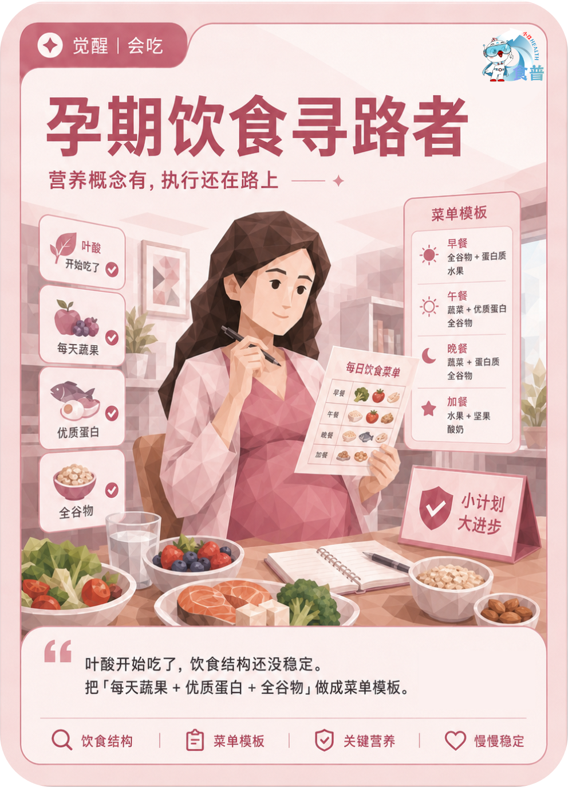

孕育人群
觉醒
会吃
P14
孕期饮食寻路者
营养概念有,执行还在路上
叶酸开始吃了,饮食结构还没稳定。把「每天蔬果 + 优质蛋白 + 全谷物」做成菜单模板。
手机端可点击“打开原图”后长按图片保存；也可以直接长按上方图卡保存。

营养概念有,执行还在路上
叶酸开始吃了,饮食结构还没稳定。把「每天蔬果 + 优质蛋白 + 全谷物」做成菜单模板。
手机端可点击“打开原图”后长按图片保存；也可以直接长按上方图卡保存。